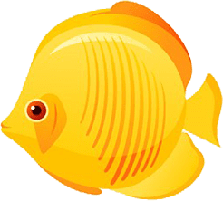
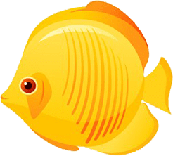

Explore
Explore


 Explore
Explore
 



Our world is largely covered by oceans. These massive bodies of water make up about 70% of Earth's surface.
Seas and oceans are much bigger and deeper than we can imagine. Learning the locations of oceans on maps helps
us understand Earth's geography. By learning the directions of north, south, east, and west, we can easily find
where oceans and continents are located. This basic geography knowledge is very important for exploring oceans
and other natural formations.
Living creatures need water, food, and oxygen to sustain their lives. Many species also live in oceans.
Creatures like fish, plankton, and corals are important parts of the ocean ecosystem. The food chain shows
how these creatures are interconnected. For example, plankton are a food source for small fish, and small
fish are eaten by larger fish. This chain helps us understand the life cycle of oceans.
The water cycle shows how water moves in nature. Water evaporates due to the sun's effect, forms clouds, and returns to Earth as rain. This cycle ensures the continuous renewal of water sources like oceans, rivers, and lakes. At the same time, winds contribute to the formation of waves and air movements in oceans. Understanding these cycles in nature helps us better understand weather events and what happens around us.
Making observations is very important in scientific studies. We can learn by carefully observing events and changes around us. For example, we start to understand how water evaporates or how wind blows by observing them. We can reinforce what we've learned by doing simple experiments. The data we obtain while making scientific observations guide us in drawing conclusions and understanding how nature works.
The PACE satellite measures the temperatures on the surfaces of oceans, determining where the water
is warm or cold. Ocean surface temperature affects both marine life and weather conditions.
For example, in warm regions, water evaporates to form clouds and can cause rain. Therefore,
knowing the surface temperature of oceans is very important for understanding the climate.
Plankton in oceans are the most fundamental food source for marine creatures. The PACE satellite
monitors the density of plankton, helping us understand how ocean ecosystems work. Regions with high
plankton density are very important for fish and other marine creatures because more food is available
in these areas. Therefore, knowing where plankton are dense is very valuable for protecting marine life.
The PACE satellite measures cloud density in the atmosphere. Clouds play an important role in the
formation of rain and changes in weather conditions. Clouds also affect Earth's temperature because
they reflect sunlight and cool the Earth's surface. The PACE satellite helps in weather forecasting
by monitoring how dense clouds are and their distribution over the world.
What kind of data do satellites collect?
What information does the PACE satellite collect about oceans?
What data does the PACE satellite measure in oceans?
How do warm ocean regions affect weather conditions?
Why are plankton important for marine creatures?
How does the PACE satellite monitor plankton density?
How do clouds affect weather conditions?
What does the PACE satellite measure in the atmosphere?
Oceans greatly affect Earth's climate. The PACE satellite helps us understand climate
changes by monitoring ocean temperatures and plankton density. The warmer the ocean surface,
the more evaporation occurs, leading to more cloud formation. These clouds cause rain,
contributing to the balancing of the climate.
How do clouds form, and how does the water cycle work? As observed by the PACE satellite,
water evaporates and rises into the atmosphere, forming clouds when it cools. Then these clouds
return as rain or snow. By doing simple experiments in the classroom, you can observe how water
evaporates and how clouds form. This way, you can learn how the water cycle works.
What happens when the surface of oceans warms up?
How does the PACE satellite examine the impact of oceans on climate?
What happens when water evaporates?
How do clouds turn into rain?